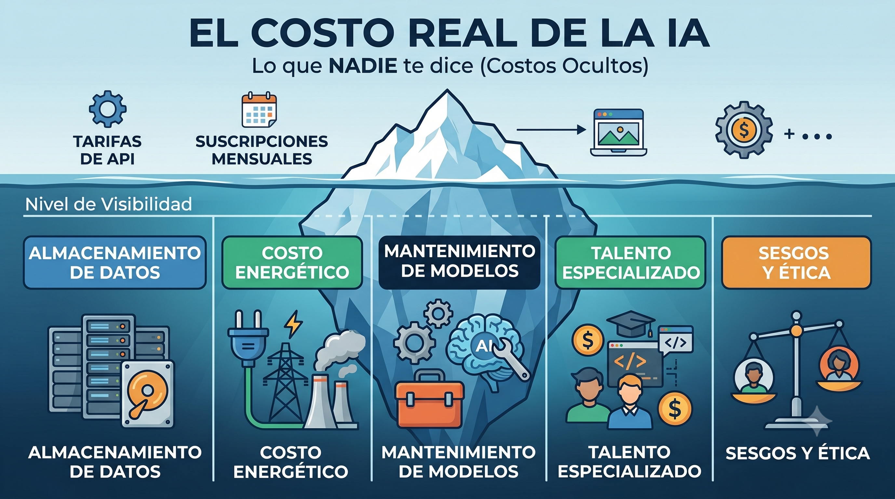

IA en los medios …

La triste realidad …


Historia de los LLM



¿Qué es un Prompt?

Un prompt es la interfaz entre tú y el modelo. Cada palabra cuenta — literalmente.
Componentes de un prompt efectivo:
- 🎯 Instrucción: qué quieres que haga
- 🎭 Rol: quién debe ser el modelo
- 📄 Contexto: info relevante (solo la necesaria)
- 🖼️ Formato: cómo responder (JSON, número, tabla)
- 📌 Ejemplos: qué es correcto / qué no
[CONTEXTO] Dataset wage1, n=526, EE.UU.
[INSTRUCCIÓN] Interpreta el coeficiente de educ.
[FORMATO] Responde en JSON con keys:
{"interpretacion": "...", "es_causal": false}


RAG: Retrieval-Augmented Generation

El problema que resuelve:
El modelo no conoce tu información privada ni actualizada. Meter todo el dataset en el contexto es caro e ineficiente. RAG inyecta solo el contexto relevante.
Flujo básico:
- 📄 Ingest: indexas tus documentos en una base vectorial
- 🔍 Retrieve: recuperas los fragmentos más relevantes
- 💬 Augment: inyectas esos fragmentos en el prompt
- 🤖 Generate: el modelo responde usando tu información
La analogía del buscador
RAG es como Google para tus datos privados: no te entrega toda la web, te entrega los 10 resultados más relevantes para tu query.


¿Qué es un Agente de AI?

Un agente percibe su entorno, planifica y actúa de forma autónoma — repitiendo el ciclo sin intervención humana.
Componentes de un agente:
- 🌍 Entorno: el mundo con el que interactúa — SO, API, navegador
- 🧠 Planificación: el LLM razona antes de actuar (ReAct, CoT, ToT)
- 🗄 Memoria: contexto inmediato (corta) + base persistente (larga)
- 🔧 Herramientas: funciones externas — búsqueda, código, BD, APIs
- ↺ Loop autónomo: actúa → observa → replantea, sin humano en cada paso

Claude Code on VSCode


De cero a RAG
📓 Google Colab + OpenAI API
Construye aplicaciones con LLMs desde cero hasta RAG
Colab · API keys seguras · Prompt Engineering · RAG de punta a punta